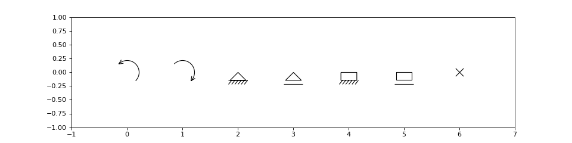

sajou.plot.markers_mpl module¶
This module contains an extension to the MarkerStyle class of Matplotlib.
It implements an additional set of markers which are used for the representation of different attributes of a structural analysis model.
In addition to the standard markers, the following are implemented:
marker description ‘ap’ arc with arrow (anti clock-wise) ‘an’ arc with arrow (clock-wise) ‘psx’ horizontal pinned support ‘psy’ vertical pinned support ‘rsx’ horizontal rolling support ‘rsy’ vertical rolling support ‘es’ encastrated support ‘rex’ ‘rolling_encastrated_x’, ‘rey’ ‘rolling_encastrated_y’, ‘rc’ ‘rotation_constrained’,
Examples
(Source code, png, hires.png, pdf)
{kind=link}
{kind=link}

#!/usr/bin/env python
# -*- coding: utf-8 -*-
"""Example to show the new marker styles"""
import matplotlib.pyplot as plt
from sajou.plot.lines_mpl import Line2D
fig = plt.figure(figsize=(12, 3))
ax = fig.add_subplot(111)
markers = ['ap', 'an', 'psx', 'rsx', 'es', 'rex', 'rc']
for ix, mark in enumerate(markers):
marker = Line2D([ix], [0], marker=mark, fillstyle='none', color='k')
ax.add_line(marker)
ax.set_xlim(-1, len(markers))
ax.set_ylim(-1, 1)
plt.show()
-
class
sajou.plot.markers_mpl.MarkerStyle(marker=None, fillstyle=None)¶ Bases:
matplotlib.markers.MarkerStyleDefines custom marker styles for Sajou
-
markers¶ list of known markes
-
fillstyles¶ list of known fillstyles
-
filled_markers¶ list of known filled markers.
Parameters: - marker (string or array_like, optional, default: None) – See the descriptions of possible markers in the module docstring.
- fillstyle (string, optional, default: 'full') – ‘full’, ‘left”, ‘right’, ‘bottom’, ‘top’, ‘none’
-
markers= {0: 'tickleft', 1: 'tickright', 2: 'tickup', ',': 'pixel', 4: 'caretleft', 5: 'caretright', 6: 'caretup', 7: 'caretdown', 8: 'caretleftbase', 9: 'caretrightbase', 10: 'caretupbase', 11: 'caretdownbase', 3: 'tickdown', '2': 'tri_up', 'an': 'arc_arrow_negative', '': 'nothing', '8': 'octagon', 's': 'square', 'rsx': 'rolling_support_x', '^': 'triangle_up', 'P': 'plus_filled', ' ': 'nothing', 'p': 'pentagon', '>': 'triangle_right', '_': 'hline', '1': 'tri_down', 'D': 'diamond', '<': 'triangle_left', 'psy': 'pinned_support_y', 'X': 'x_filled', 'ap': 'arc_arrow_positive', 'v': 'triangle_down', 'psx': 'pinned_support_x', 'H': 'hexagon2', '+': 'plus', 'rsy': 'rolling_support_y', '3': 'tri_left', 'o': 'circle', 'd': 'thin_diamond', '*': 'star', 'h': 'hexagon1', None: 'nothing', '4': 'tri_right', 'rc': 'rotation_constrained', 'rex': 'rolling_encastrated_x', 'es': 'encastrated_support', 'None': 'nothing', 'x': 'x', 'rey': 'rolling_encastrated_y', '.': 'point', '|': 'vline'}
-
markers_custom= {'rc': 'rotation_constrained', 'psy': 'pinned_support_y', 'rsy': 'rolling_support_y', 'an': 'arc_arrow_negative', 'ap': 'arc_arrow_positive', 'rex': 'rolling_encastrated_x', 'rsx': 'rolling_support_x', 'rey': 'rolling_encastrated_y', 'psx': 'pinned_support_x', 'es': 'encastrated_support'}¶
-